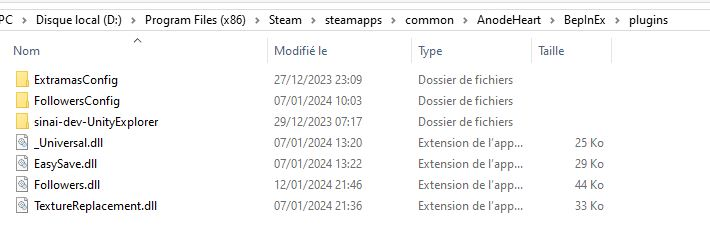

Plugin lists (Made per Snrasha)
Download mods below which are .dll and put them on the Front\BepInEx\plugins.
If under a .zip, unzip it.

No Time Limit
- Download the latest plugin (.dll)
- This plugin will remove the time limit of 3 years.
- Will disable the difficulty and the fun of the game of having a timer.
- Can be safely removed. If past 3 years, the bad ending will be started.
New Game +
- Download the latest plugin (.dll)
- This plugin will improve greatly your new game +, for beat more easily the early game.
- Will be active only if you got the upgraded mech + one ending from the campaign.
- Beating Lycurgus corps campaign will not unlock new game + for Blazing Blossoms
- Can be safely removed after initiated the new game +. Do not break your save.
Color your Faction
- Download the latest plugin (.dll)
- This plugin add qew buttons at the start of the selection of your campaign. For let you choose a color for this specific faction.
- After starting a game, or in a current game. You can just return on this menu for change your color.
- Lycurgus corps/Blazing Blossoms store their own color.
- Can be safely removed. Do not break your save.
More Exp and More Money
- Download the latest plugin (.dll)
- This plugin add qew buttons at the video option menu (in battle or main menu).
- The first boost pilot exp. The second boost captain exp. The third boost money at the end of a battle.
- Can be safely removed. Do not break your save.
- If you have the old ExpMore.dll, remove it.
Catch Rate Increased
- Download the latest plugin (.dll)
- This plugin increase of +40% the catch rate depending of the HP and +10% depending of the EN/energy.
- Can be safely removed. Do not break your save.
Add Unplayable/Duplicate Character
- Download the latest plugin (.zip)
- Unzip it for get the dll and roster.txt and put them in Bepinex/plugins
- roster.txt contains 4 characters. You can change it, add or remove number. Can go to 1 to around 1100 (unnamed npc). Ping Snrasha in discord for get what you want.
- In futur update, you will be able to put the name of the character.
- Unnamed npc will have a universal customisation.
- They will be added to any loaded game or new game.
- If you remove roster.txt or any number, will not cause any issue. Characters loaded are saved.
- If you remove the mod, the save will be corrupted and you will need to edit your save and remove these (easy to find them)
Add unlimited amount of arms/ships
- Download the latest plugin (.zip)
- Unzip it for get the dll and shiparms.csv and put them in Bepinex/plugins
- shiparms.csv are a sheet containing two columns
- The first is the unit(ship/arms) to 1 to 51 from your collection. Will ignore any row not unlocked.
- The second is the level of the unit to 0 to 6. If you put level 6 but have not unlocked above 2, it will set it to 2
- You can put multiple times the same row
- .
- The button for add them will appear on the menu in-game. After one click, will dissapear. But you can reopen the menu for reclick.
- Modify shiparms.csv before clicking the button. The file is reread everytime you click it.
- For kept missclick, save then remove the mod after use.
- Can be safely removed. Do not break your save.
Buyable arms/ships from collection
- Download the latest plugin (.dll)
- This plugin let you buy any ships or arms than you have unlocked from your collection.
- Apply on your current game for any ships/arms you get. Better to use it on a new playtrought.
- Can be safely removed. Do not break your save.
Buyable unplayable arms/ships
- Download the latest plugin (.dll)
- This plugin let you buy any unplayable ships or arms
- Exclude qew ships/arms not mean to be usable (aka mines).
- Can be safely removed. Do not break your save.